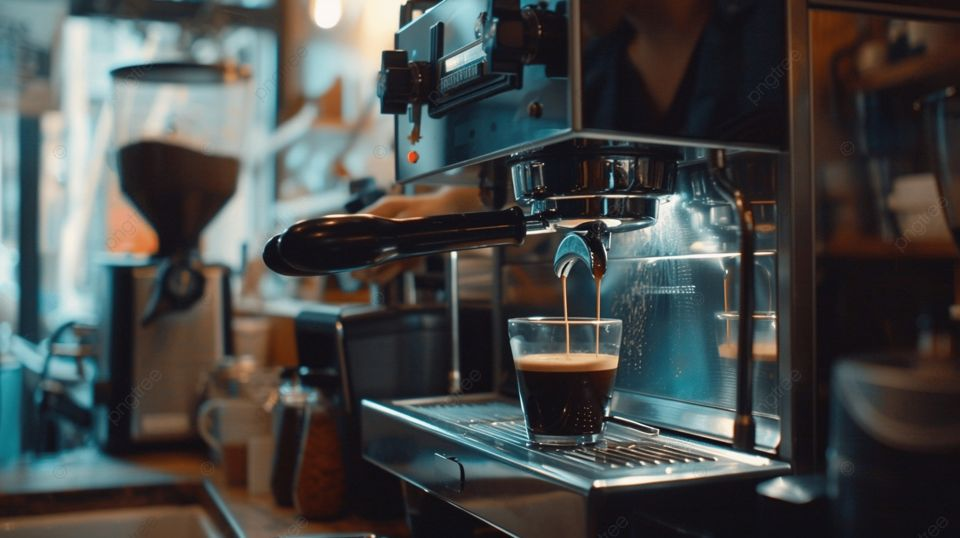

Bahan Lokal
Menggunakan bahan lokal dari petani sekitar.
Cerita Usaha
Kopi Pojok Kidul adalah UMKM fiktif yang mengolah kopi lokal untuk kebutuhan pembelajaran.

Menggunakan bahan lokal dari petani sekitar.
Mengutamakan proses sederhana dan transparan.
Memberikan pelayanan ramah kepada pelanggan.